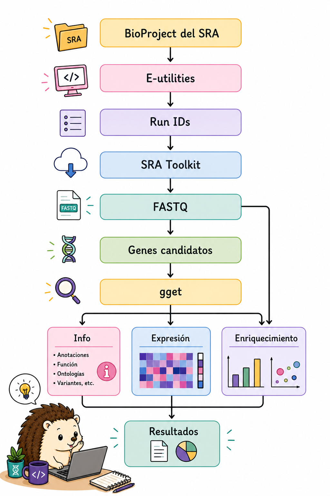

12 Resumen y recursos
Llegaste al final del recorrido. El objetivo de este tutorial no es que memorices una lista de comandos aislados, sino que puedas reconocer patrones de trabajo y construir soluciones a partir de ellos.
En un proyecto real probablemente utilizarás solo una parte de estas herramientas, pero las mismas ideas se repiten constantemente: inspeccionar, seleccionar, transformar, validar, automatizar y documentar.
Un ejemplo de cómo pueden integrarse varias de estas herramientas sería:

Este recorrido reúne varias de las herramientas que vimos durante el tutorial:
- E-utilities para consultar información del NCBI.
- SRA Toolkit para obtener los datos de secuenciación.
- Bash y sus herramientas para inspeccionar y procesar los archivos.
seqtkpara trabajar con secuencias FASTA y FASTQ.ggetpara consultar información, secuencias, expresión y enriquecimiento desde Python.
No todos los análisis seguirán exactamente este camino. Dependiendo de la pregunta biológica y de los datos disponibles, algunas etapas pueden omitirse, cambiar de orden o requerir herramientas adicionales.
12.1 Checklist de salida
Antes de considerar terminado un análisis desde la línea de comandos, comprueba:
En bioinformática, los errores forman parte del proceso. Un comando puede fallar porque el archivo no tiene la estructura que esperábamos, porque una herramienta no está instalada o simplemente porque escribimos algo diferente a lo que queríamos.
No pasa nada. Una parte importante de aprender a trabajar desde la terminal es aprender a leer los errores, revisar lo que hicimos y probar de nuevo.
Cuando algo no funcione, vuelve a lo básico:
- ¿El archivo de entrada es el correcto?
- ¿La estructura del archivo es la que esperaba?
- ¿El comando está haciendo lo que creo?
- ¿Qué parte del pipeline produjo el error?
A veces encontrar el error es también la forma de entender mejor lo que estamos haciendo.

12.2 Tabla de referencia rápida
La siguiente tabla resume algunos de los comandos y herramientas que aparecen en el tutorial. Úsala como referencia rápida; para entender cómo funcionan, vuelve a la sección correspondiente
| Tarea | Herramienta | Comando ejemplo |
|---|---|---|
| Extraer columnas | awk |
awk '{print $2,$5}' file.txt |
| Filtrar registros | awk |
awk '$3 == "gene"' file.gff3 |
| Reemplazar texto | sed |
sed 's/foo/bar/g' file.txt |
| Buscar patrones | grep |
grep '^>' sequences.fa |
| Ordenar datos | sort |
sort -k2,2n file.txt |
| Submuestrear reads | seqtk |
seqtk sample -s42 in.fq 10000 |
| Descargar SRA | prefetch |
prefetch SRR12345 |
| Convertir SRA | fasterq-dump |
fasterq-dump SRR12345 --threads 8 |
| Descargar genoma | datasets |
datasets download genome accession GCF_... |
| Descargar gen | datasets |
datasets download gene symbol TP53 --taxon human |
| Descargar batch | datasets |
datasets download genome accession --inputfile acc.txt |
| Metadatos a TSV | dataformat |
... | dataformat tsv genome |
| Buscar en NCBI | esearch |
esearch -db pubmed -query "BRCA1" |
| Recuperar registros | efetch |
efetch -db nucleotide -id NM_007294 |
| Conectar bases | elink |
elink -target protein |
| Extraer datos XML | xtract |
xtract -pattern ... -element ... |
| Buscar genes | gget.search |
gget.search("TP53", "homo_sapiens") |
| Obtener información | gget.info |
gget.info("ENSG...") |
| Obtener secuencia | gget.seq |
gget.seq("ENSG...") |
| Explorar expresión | gget.archs4 |
gget.archs4("TP53", which="tissue") |
| Enriquecimiento | gget.enrichr |
gget.enrichr(genes, database="ontology") |
12.3 Glosario mínimo
| Término | Significado en este tutorial |
|---|---|
| accession | Identificador único de un registro o conjunto de datos en una base de datos. |
| read | Secuencia obtenida durante una corrida de secuenciación. |
| paired-end | Estrategia en la que cada fragmento se secuencia desde ambos extremos, generando R1 y R2. |
| pipeline | Secuencia de comandos donde la salida de un paso alimenta al siguiente. |
| metadatos | Información que describe una muestra, experimento, genoma o registro. |
| anotación | Información que identifica características biológicas sobre una secuencia. |
| reproducibilidad | Capacidad de repetir un análisis y obtener un resultado equivalente a partir de los mismos datos y parámetros. |
12.4 Recursos adicionales
- 📚 Bioinformatics one-liners (Stephen Turner)
- 🧰 SRA Toolkit Wiki
- 🗂️ NCBI Datasets CLI — Documentación oficial
- 🗂️ NCBI Datasets — Referencia de comandos
- 🔬 NCBI E-utilities Documentation
- 🐍 gget Documentation
- 📖 seqtk GitHub
- 🔧 GNU parallel Tutorial
- Siempre valida los archivos descargados antes de procesarlos (
vdb-validate,md5sum) - Usa semillas reproducibles (
-s42) en cualquier operación de submuestreo - Agrega
--dry-runantes de ejecutar comandos destructivos en paralelo - Registra tu API key de NCBI para obtener mayor velocidad con E-utilities
- Usa
--inputfileen NCBI Datasets para descargas batch reproducibles desde un archivo de texto - Prefiere WSL sobre PowerShell nativo en Windows para mayor compatibilidad con scripts bash
- Documenta tus pipelines con comentarios y guarda los logs de cada paso
Tutorial generado con Quarto · Bioinformática